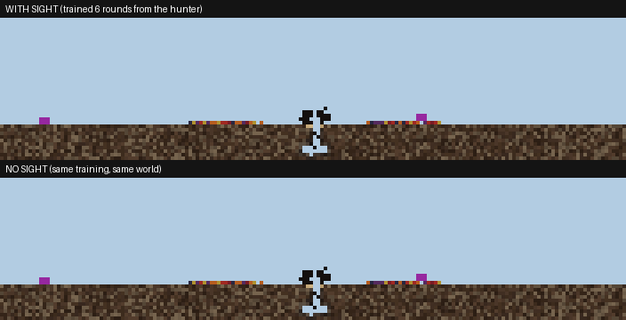

Spiders that can share a box with a colony
Lone predator thread, 25 October 2026. Spiders bred by the game's own rules in a lab box, with nothing refilled.

The new spider pool, living beside the colony
The pool picked for coexistence, in the lab_mid_fruit box with the hand-built ant (seed 12). One frame every 1,000, from frame 30,000 to 130,000. The yellow dots are ants and the dark-red clusters are spiders. By frame 130,000 the colony still holds 186 ants. Four spiders are alive, after 35 were born.
spider births 35 · spiders starved 16 · killed by ants 12 · ants alive at the end 186 · both kinds alive in 100% of samples
How the pools compare in the lab
Two spiders in lab_mid_fruit with the hand-built ant, run for 300,000 frames on four seeds. "Together" is the share of the run in which spiders and ants were both alive.
| Spider pool | Together, by seed | Ants at the end |
|---|---|---|
| Before (trained without digestion time) | 13% · 4% · 2% · 15% | 226–444 |
| Evolved, no coexistence selection | 24% · 25% · 7% · 15% | 354 · 146 · 0 · 0 |
| Evolved, picked for coexistence (now in the lab) | 71% · 80% · 11% · 5% | 199 · 187 · 174 · 267 |
| No spiders at all | — | 190–266 |
Four seeds is a first look. On the two other seeds, the new pool's spiders died before they bred.

Earlier: spiders with and without sight
From 24 October. The same bed run twice, with the spider's eye on and off. The sighted pool is the one the new spiders were bred from.